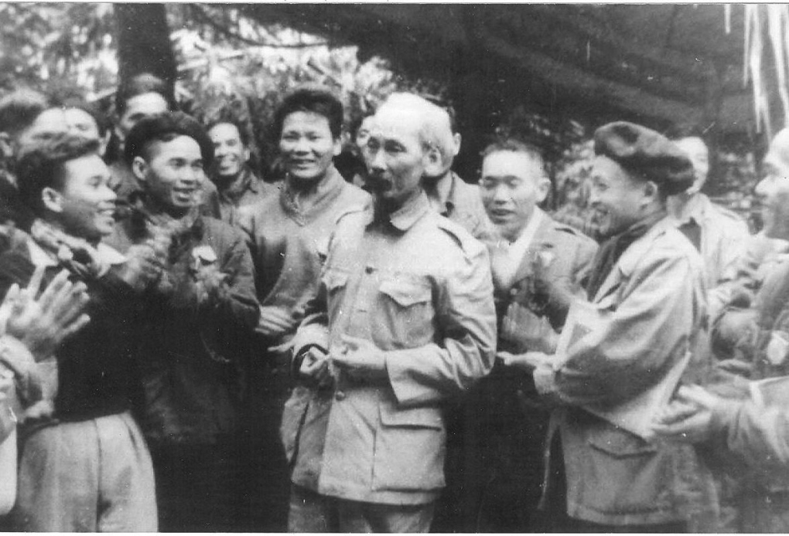

-

Bí quyết thành công của nhà chính trị Hồ Chí Minh
Tại sao trong cùng hoàn cảnh lịch sử, nhiều người
Việt Nam ra đi tìm đường cứu nước, nhưng chỉ có
Nguyễn Tất Thành - Hồ Chí Minh thực hiện thành công
sứ mệnh lịch sử của mình đối với Tổ quốc và đồng bào
Tại sao trong cùng hoàn cảnh lịch sử, nhiều người
Việt Nam ra đi tìm đường cứu nước, nhưng chỉ có
Nguyễn Tất Thành - Hồ Chí Minh thực hiện thành công
sứ mệnh lịch sử của mình đối với Tổ quốc và đồng
bào. Việt Nam ra đi tìm đường cứu nước, nhưng chỉ có
Nguyễn Tất Thành - Hồ Chí Minh thực hiện thành
công..
Chi tiết
-
-
Học ở Bác đức tính tiết kiệm
Người xưa có câu: “Thác là thể phách, còn là tinh
anh” Chủ tịch Hồ Chí Minh kính yêu của chúng ta - vị
lãnh tụ cách mạng thiên tài, anh hùng giải phóng dân
tộc, danh nhân văn hoá thế giới tuy không còn nữa
nhưng tinh anh của Người đã để lại cho chúng ta một
di sản to lớn, đó là tư tưởng vĩ đại và một tấm
gương sáng ngời về đạo đức - tượng trưng cho những
gì cao đẹp nhất của nhân cách và khí phách Việt Nam.
Chi tiết
-
Chủ tịch Hồ Chí Minh – Một số hình ảnh cuộc sống
đời thường
Chuyên đề: “Chủ tịch Hồ Chí Minh Một số hình ảnh
cuộc sống đời thường” gồm 85 hình ảnh và 15 tư liệu.
Nội dung chuyên đề nhằm làm rõ nét hơn về con người
của Chủ tịch Hồ Chí Minh không phải dưới góc độ một
vị lãnh tụ, một nhà hoạt động quốc tế lỗi lạc, mà
dưới góc độ của một con người bình thường. Người
sống giản dị, từ nơi ăn chốn ở... nhưng ẩn trong đó
là một tình yêu bao la đối với con người. Người đã
hy sinh cả cuộc đời mình cho sự nghiệp giải phóng
dân tộc, hướng con người đến “Độc lập, Tự do, Hạnh
phúc”. .
Chi tiết
-
Học Bác từ tấm gương tự học và tác phong làm việc
hiệu quả, chuẩn mực
Như Xã luận Báo Granma (Cuba), cơ quan ngôn luận của
Trung ương Đảng Cộng sản Cuba viết: “Bác Hồ là tấm
gương mà nhiều con người có thể noi theo và làm được
như Người”, tư tưởng và đạo đức Hồ Chí Minh đã trở
thành tấm gương cho nhiều thế hệ đương thời và sáng
soi trong sự nghiệp cách mạng của dân tộc Việt
Nam... .
Chi tiết
 Học Bác từ tấm gương tự học và tác phong làm việc hiệu quả, chuẩn mực
Học Bác từ tấm gương tự học và tác phong làm việc hiệu quả, chuẩn mực